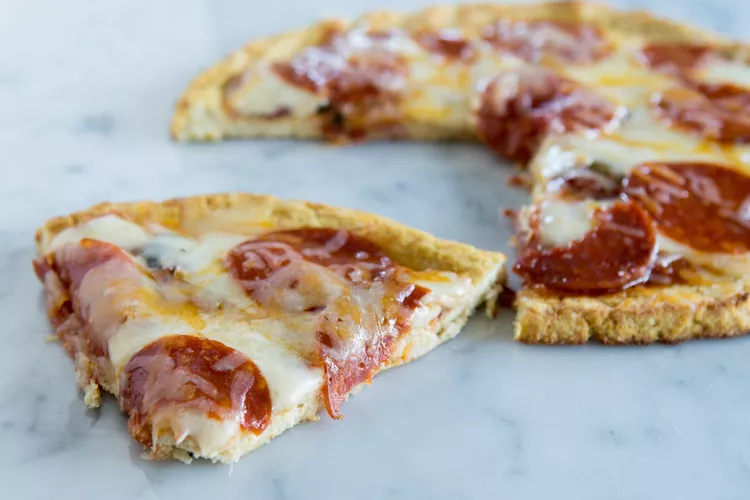

Pizza

Descriptions
Pizza is a dish that originated in Naples, Italy. It is a flat bread, usually round
Ingrendients
- 350 g flour
- 7g dry yeast
- 240 ml warm water
- 2 teaspoons of sugar
- 2 teaspoons of olive
Steps
- lined up the following: 200g of passata, a handful of basil, a ball of Granarolo mozzarella, a few cherry tomatoes, and 1 piece of pizza dough.
- I cut some basil leaves, crushed the clove of garlic and mixed them with tomato paste, together with salt and hot pepper.
- After that I took it out and sprinkled the rest of the basil leaves, together with a drop of extra virgin olive oil.